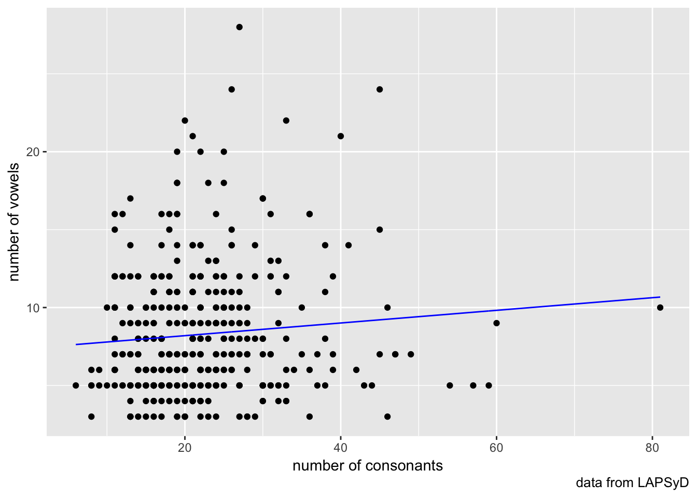
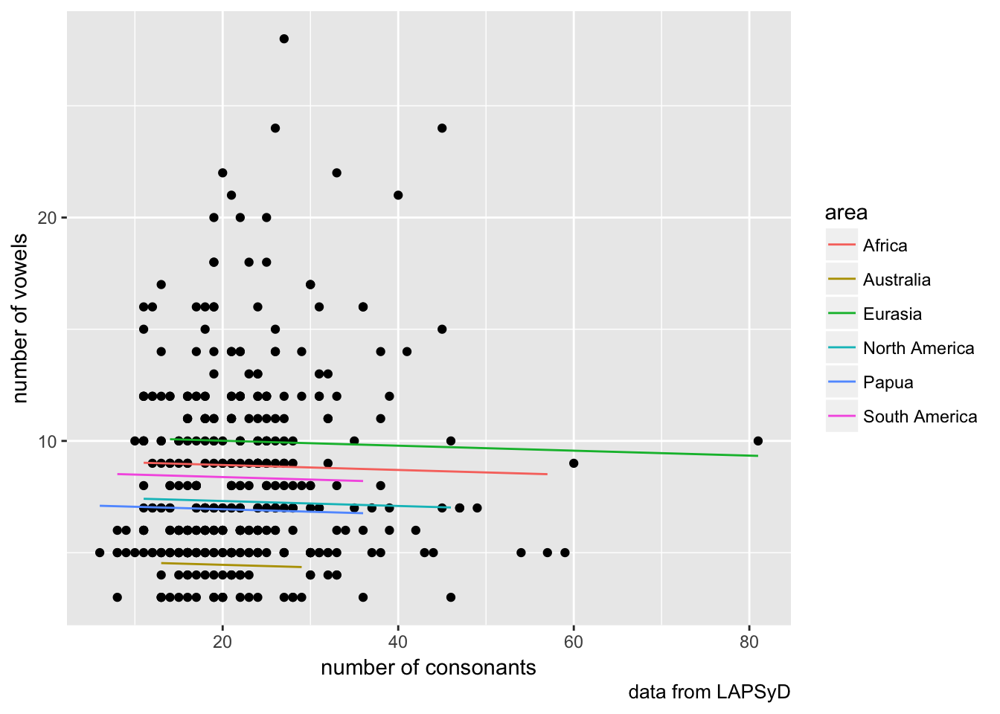
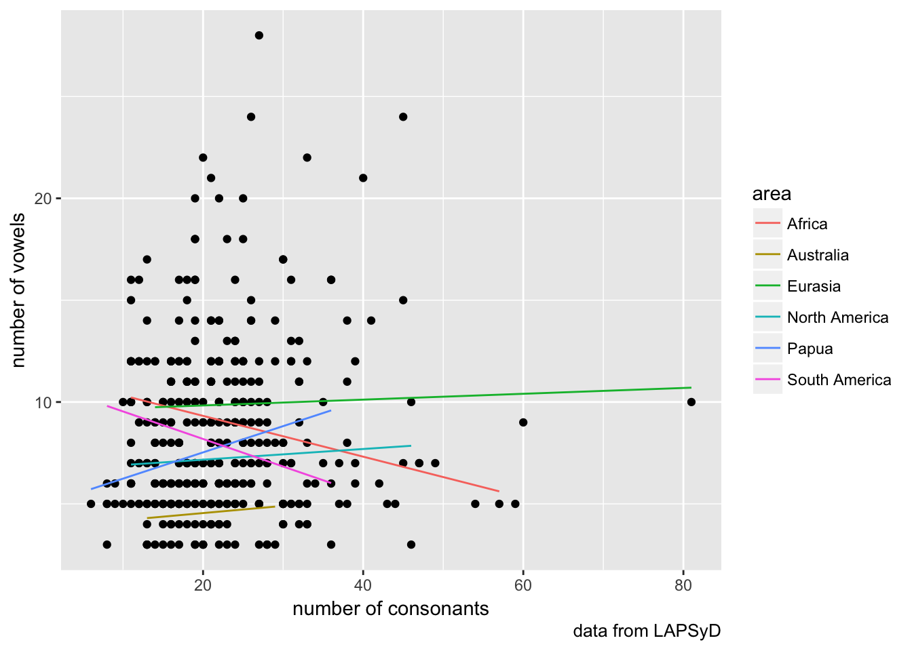
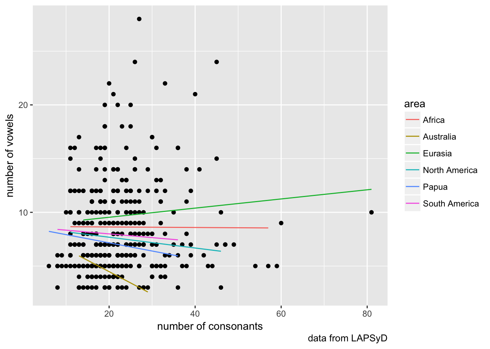
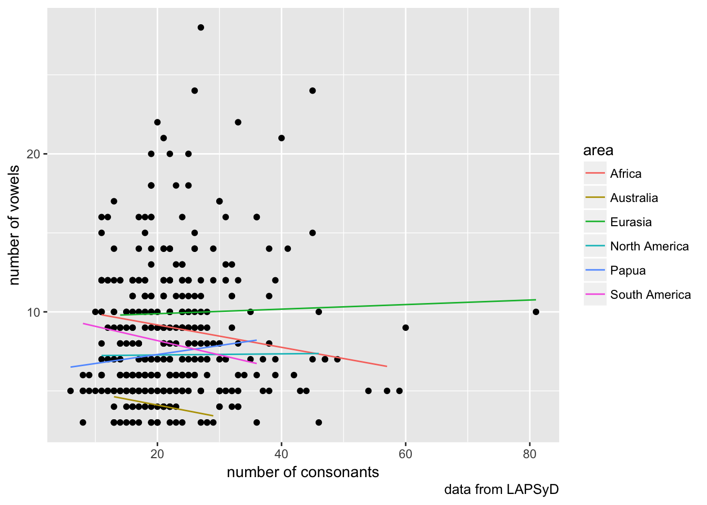
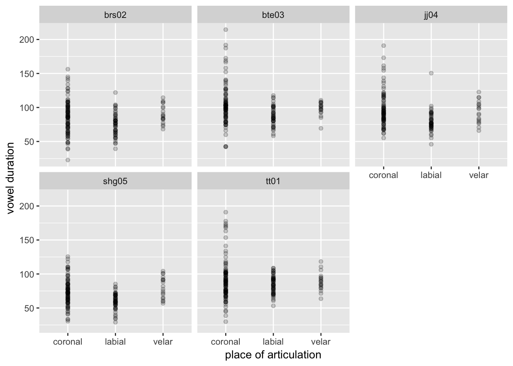
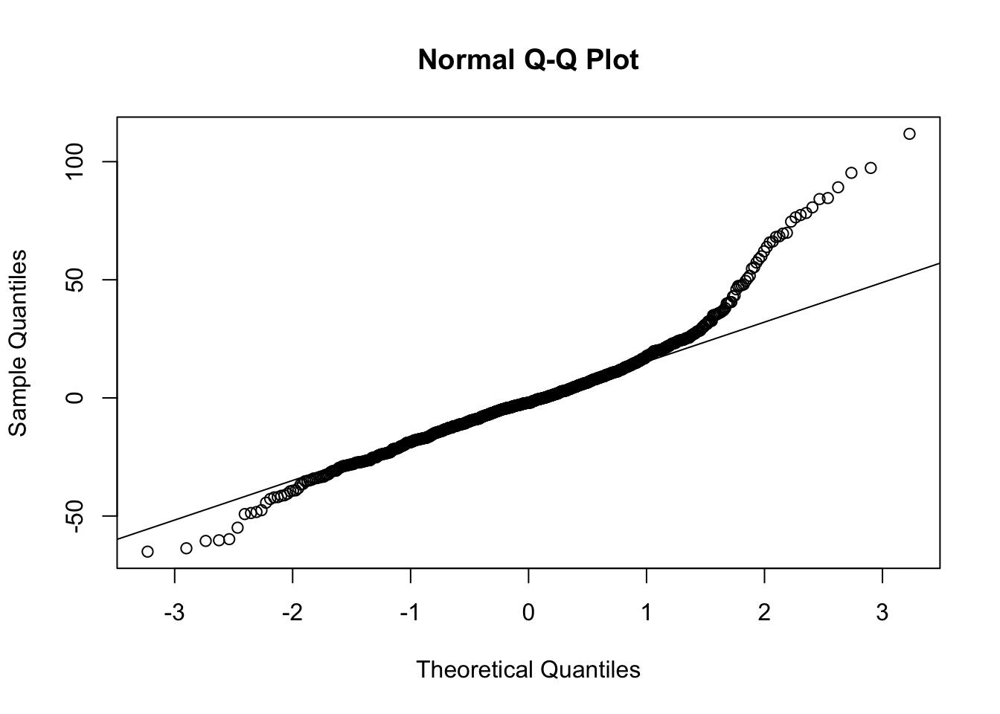
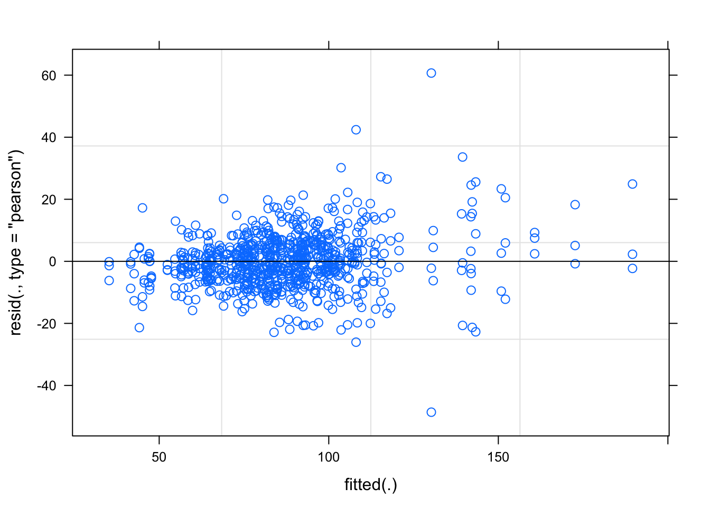
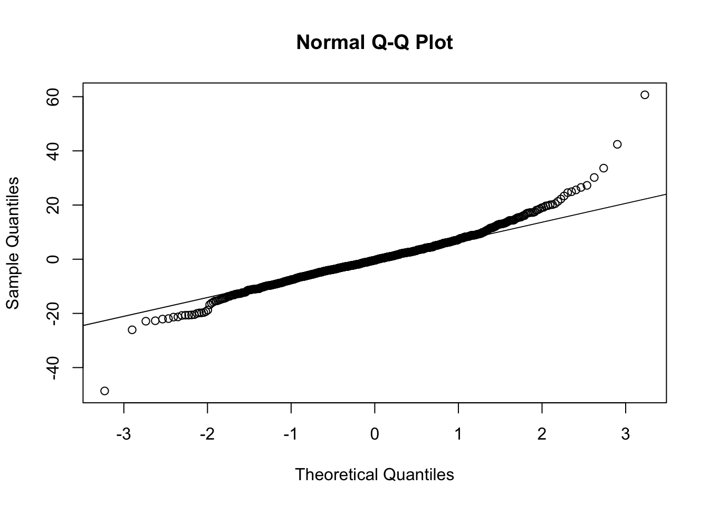

Lab 9. Linear mixed-effect models
Assignment link
library(tidyverse)
#install.packages("lingtypology")
library(lingtypology)
library(lme4)1. Consonants and vowels
lapsyd <- read.csv("https://goo.gl/eD4S5n")
map.feature(lapsyd$name, features = lapsyd$area,
label = lapsyd$name,
label.hide = TRUE)fit1 <- lm(count_vowel~count_consonant, data = lapsyd)
summary(fit1)##
## Call:
## lm(formula = count_vowel ~ count_consonant, data = lapsyd)
##
## Residuals:
## Min 1Q Median 3Q Max
## -6.252 -2.992 -1.195 2.201 19.520
##
## Coefficients:
## Estimate Std. Error t value Pr(>|t|)
## (Intercept) 7.38236 0.54784 13.475 <2e-16 ***
## count_consonant 0.04065 0.02274 1.787 0.0746 .
## ---
## Signif. codes: 0 '***' 0.001 '**' 0.01 '*' 0.05 '.' 0.1 ' ' 1
##
## Residual standard error: 4.093 on 400 degrees of freedom
## Multiple R-squared: 0.007923, Adjusted R-squared: 0.005443
## F-statistic: 3.195 on 1 and 400 DF, p-value: 0.07464lapsyd$model1 <- predict(fit1)
lapsyd %>%
ggplot(aes(count_consonant, count_vowel))+
geom_point()+
geom_line(aes(count_consonant, model1), color = "blue")+
labs(x = "number of consonants",
y = "number of vowels",
caption = "data from LAPSyD")
fit2 <- lmer(count_vowel ~ count_consonant + (1|area), data = lapsyd)
summary(fit2)## Linear mixed model fit by REML ['lmerMod']
## Formula: count_vowel ~ count_consonant + (1 | area)
## Data: lapsyd
##
## REML criterion at convergence: 2242
##
## Scaled residuals:
## Min 1Q Median 3Q Max
## -1.5298 -0.6147 -0.2599 0.5146 4.7043
##
## Random effects:
## Groups Name Variance Std.Dev.
## area (Intercept) 3.983 1.996
## Residual 14.753 3.841
## Number of obs: 402, groups: area, 6
##
## Fixed effects:
## Estimate Std. Error t value
## (Intercept) 7.8928 0.9852 8.011
## count_consonant -0.0111 0.0240 -0.463
##
## Correlation of Fixed Effects:
## (Intr)
## cont_cnsnnt -0.518lapsyd$model2 <- predict(fit2)
lapsyd %>%
ggplot(aes(count_consonant, count_vowel))+
geom_point()+
geom_line(aes(count_consonant, model2, color = area))+
labs(x = "number of consonants",
y = "number of vowels",
caption = "data from LAPSyD")
fit3 <- lmer(count_vowel ~ count_consonant + (1+count_consonant|area), data = lapsyd)
summary(fit3)## Linear mixed model fit by REML ['lmerMod']
## Formula: count_vowel ~ count_consonant + (1 + count_consonant | area)
## Data: lapsyd
##
## REML criterion at convergence: 2236.4
##
## Scaled residuals:
## Min 1Q Median 3Q Max
## -1.7991 -0.6217 -0.2334 0.5299 4.7743
##
## Random effects:
## Groups Name Variance Std.Dev. Corr
## area (Intercept) 11.94558 3.4562
## count_consonant 0.01355 0.1164 -0.84
## Residual 14.32212 3.7845
## Number of obs: 402, groups: area, 6
##
## Fixed effects:
## Estimate Std. Error t value
## (Intercept) 7.866281 1.555096 5.058
## count_consonant -0.005108 0.056987 -0.090
##
## Correlation of Fixed Effects:
## (Intr)
## cont_cnsnnt -0.854lapsyd$model3 <- predict(fit3)
lapsyd %>%
ggplot(aes(count_consonant, count_vowel))+
geom_point()+
geom_line(aes(count_consonant, model3, color = area))+
labs(x = "number of consonants",
y = "number of vowels",
caption = "data from LAPSyD")
fit4 <- lmer(count_vowel ~ count_consonant + (0+count_consonant|area), data = lapsyd)
summary(fit4)## Linear mixed model fit by REML ['lmerMod']
## Formula: count_vowel ~ count_consonant + (0 + count_consonant | area)
## Data: lapsyd
##
## REML criterion at convergence: 2250.8
##
## Scaled residuals:
## Min 1Q Median 3Q Max
## -1.5967 -0.6774 -0.2688 0.4497 4.6750
##
## Random effects:
## Groups Name Variance Std.Dev.
## area count_consonant 0.008151 0.09028
## Residual 15.093094 3.88498
## Number of obs: 402, groups: area, 6
##
## Fixed effects:
## Estimate Std. Error t value
## (Intercept) 8.68579 0.59439 14.613
## count_consonant -0.05519 0.04649 -1.187
##
## Correlation of Fixed Effects:
## (Intr)
## cont_cnsnnt -0.563lapsyd$model4 <- predict(fit4)
lapsyd %>%
ggplot(aes(count_consonant, count_vowel))+
geom_point()+
geom_line(aes(count_consonant, model4, color = area))+
labs(x = "number of consonants",
y = "number of vowels",
caption = "data from LAPSyD")
fit5 <- lmer(count_vowel ~ count_consonant + (1|area) + (0+count_consonant|area), data = lapsyd)
summary(fit5)## Linear mixed model fit by REML ['lmerMod']
## Formula:
## count_vowel ~ count_consonant + (1 | area) + (0 + count_consonant |
## area)
## Data: lapsyd
##
## REML criterion at convergence: 2239.8
##
## Scaled residuals:
## Min 1Q Median 3Q Max
## -1.6499 -0.6023 -0.2494 0.5018 4.7428
##
## Random effects:
## Groups Name Variance Std.Dev.
## area (Intercept) 5.67146 2.38148
## area.1 count_consonant 0.00606 0.07785
## Residual 14.42645 3.79822
## Number of obs: 402, groups: area, 6
##
## Fixed effects:
## Estimate Std. Error t value
## (Intercept) 8.19243 1.15107 7.117
## count_consonant -0.02700 0.04326 -0.624
##
## Correlation of Fixed Effects:
## (Intr)
## cont_cnsnnt -0.337lapsyd$model5 <- predict(fit5)
lapsyd %>%
ggplot(aes(count_consonant, count_vowel))+
geom_point()+
geom_line(aes(count_consonant, model5, color = area))+
labs(x = "number of consonants",
y = "number of vowels",
caption = "data from LAPSyD")
anova(fit5, fit4, fit3, fit2, fit1)## refitting model(s) with ML (instead of REML)2. Icelandic vowels
This set is based on (Coretta 2017, https://goo.gl/NrfgJm). This dissertation deals with the relation between vowel duration and aspiration in consonants. Author carried out a data collection with 5 natives speakers of Icelandic. Then he extracted the duration of vowels followed by aspirated versus non-aspirated consonants. Check out whether the vowels before consonants of different places of articulation are significantly different.
Use read.csv(“https://goo.gl/7gIjvK”) for downloading data.
2.1
Calculate mean values for vowel duration in your data grouped by place (of articulation) and speaker.
df <- read.csv("https://goo.gl/7gIjvK")
df %>%
group_by(place, speaker) %>%
summarise(mean(vowel.dur))# Let’s do some visualization
df %>%
ggplot(aes(place, vowel.dur)) +
geom_point(alpha = 0.2) +
facet_wrap(~ speaker) +
xlab("place of articulation") +
ylab("vowel duration")
2.2 Calculate mean values for vowel duration in your data grouped by word.
df <- read.csv("https://goo.gl/7gIjvK")
df %>%
group_by(word) %>%
summarise(mean(vowel.dur))# 2.3 Fit mixed-effect linear regression model
taking into account speaker as a random effect. Plot
fit <- lmer(vowel.dur ~ place + (1|speaker), data = df)
summary(fit)## Linear mixed model fit by REML ['lmerMod']
## Formula: vowel.dur ~ place + (1 | speaker)
## Data: df
##
## REML criterion at convergence: 7292.9
##
## Scaled residuals:
## Min 1Q Median 3Q Max
## -2.9226 -0.5708 -0.0926 0.4450 5.0208
##
## Random effects:
## Groups Name Variance Std.Dev.
## speaker (Intercept) 111.6 10.57
## Residual 495.8 22.27
## Number of obs: 806, groups: speaker, 5
##
## Fixed effects:
## Estimate Std. Error t value
## (Intercept) 90.9320 4.8361 18.803
## placelabial -13.3303 1.7503 -7.616
## placevelar -0.7663 2.5516 -0.300
##
## Correlation of Fixed Effects:
## (Intr) plclbl
## placelabial -0.126
## placevelar -0.086 0.238plot(fit)
qqnorm(resid(fit))
qqline(resid(fit))
2.3 Fit mixed-effect linear regression model
taking into account speaker and word as random effects. Note that random factors can be nested.
If our groups are nested (as it happens with speakers and words), the following model should be wrong:
fit2.WRONG <- lmer(vowel.dur ~ place + (1|speaker) + (1|word), data = df) # treats the two random effects as if they are crossedTo avoid future confusion let us create a new variable that is explicitly nested. Let???s call it sample:
df <- within(df, sample <- factor(speaker:word))
head(summary(df$sample))## bte03:d\303\266gg tt01:d\303\266gg tt01:kampa brs02:detta
## 6 4 4 3
## brs02:duld brs02:dult
## 3 3Now let’s fit the nested mixed-effect model properly:
fit2 <- lmer(vowel.dur ~ place + (1|speaker) + (1|sample), data = df) # treats the two random effects as if they are nested
summary(fit2)## Linear mixed model fit by REML ['lmerMod']
## Formula: vowel.dur ~ place + (1 | speaker) + (1 | sample)
## Data: df
##
## REML criterion at convergence: 6745.1
##
## Scaled residuals:
## Min 1Q Median 3Q Max
## -4.6053 -0.4657 -0.0336 0.4225 5.7479
##
## Random effects:
## Groups Name Variance Std.Dev.
## sample (Intercept) 390.9 19.77
## speaker (Intercept) 105.6 10.28
## Residual 111.5 10.56
## Number of obs: 806, groups: sample, 273; speaker, 5
##
## Fixed effects:
## Estimate Std. Error t value
## (Intercept) 91.0944 4.8795 18.669
## placelabial -13.4685 2.7927 -4.823
## placevelar -0.9022 4.1740 -0.216
##
## Correlation of Fixed Effects:
## (Intr) plclbl
## placelabial -0.197
## placevelar -0.132 0.231plot(fit2)
qqnorm(resid(fit2))
qqline(resid(fit2))